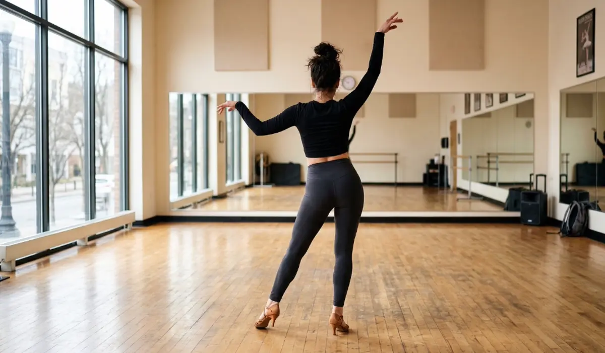
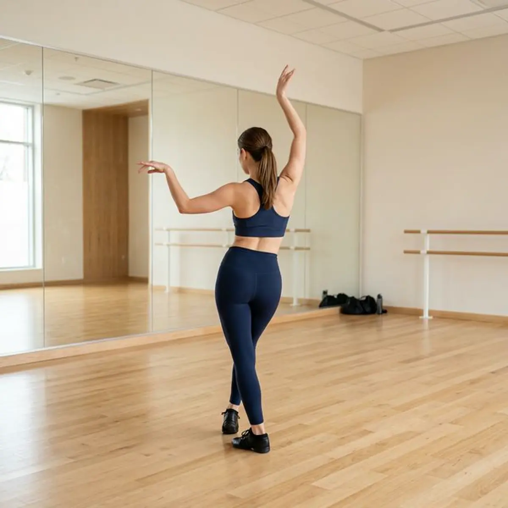

For many, Bachata is a dance of connection with a partner. But there is a hidden dimension to this art form—one that is strictly personal, deeply feminine, and incredibly empowering. It is the world of Lady Styling, and at AXcent Dance, we believe it is the key to truly unleashing your unique identity on the dance floor.

It Is Not Just Bachata
A common misconception is that Lady Styling in Zurich is simply about adding arm flourishes to your basic step. In reality, it is a holistic dance discipline. Our Lady Styling classes integrate concepts from modern and contemporary dance, focusing on body awareness, isolation, and fluid mechanics.
By learning these contemporary concepts, you do not just learn "moves"—you learn how your body functions as an instrument. Whether it is a subtle head roll or a complex contemporary-influenced body wave, the goal is to make every movement look intentional and effortless.
Modern Concepts
We use contemporary dance techniques to improve your balance, core strength, and the quality of your movement.
Body Awareness
Learn to isolate every muscle group. Deep body awareness is the foundation of elegant styling and powerful expression.

Unleashing Your Style
The most beautiful thing about dance is that no two people move the same way. Lady Styling is the practice of unleashing your unique style. It is a safe space to experiment with different energies—from the sharp and intense to the soft and romantic.
In our studio, we encourage followers to break away from being "reactive" and start being "proactive." When you understand the music and your own body, you are no longer just following a lead; you are contributing to a shared piece of art with your own feminine flair.
Femininity in Motion
Femininity is not a single look—it is an energy. Our classes are designed to help you tap into that energy and express it through modern Bachata concepts. It is about confidence, poise, and the courage to be seen.
As you progress, you will notice that this confidence spreads far beyond the studio doors. The posture, the grace, and the self-assuredness you develop in Lady Styling will stay with you in your everyday life in Zurich. If you are new to the scene, check out our Beginner Guide to see how to start your journey.
Beyond Gender: Styling in 2026
While the term "Lady Styling" is deeply rooted in dance tradition, the landscape in 2026 has evolved. Today, styling is seen as universal body expression. These classes are no longer exclusive to one gender; they are for any dancer who wishes to master the nuances of body movement.
We see an increasing number of leaders joining these sessions to improve their own fluidity and musicality. Whether you identify as a follower or a leader, the concepts of isolations, arm placement, and contemporary flow are essential tools for any modern dancer. It is about styling in general—mastering the art of being yourself on the floor.
Ready to Find Your Style?
Join our Open Level Lady Styling course every Thursday. Experience a community of supportive women and discover the dancer you were meant to be. View our weekly schedule or register online today.
BOOK YOUR TRIAL CLASS